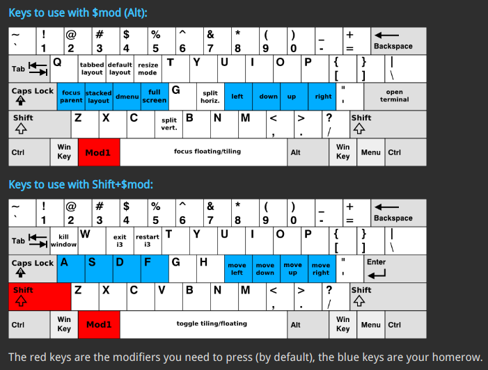

Arch Linux + i3wm
Install arch
Both virtualbox/vagrant are available
update source
pacman - Syy
pacman - Syu
Install yourt
vim /etc/pacman.conf
[archlinuxcn]
Server=https://mirrors.ustc.edu.cn/archlinuxcn/$arch
pacman - Sy
pacman - S yaourt
pacman - S archlinuxcn-keyring
Install i3
pacman - S xterm
pacman - S xorg-server xorg-xinit
pacman - S i3-wm
or
pacman - S i3-gaps
Install other
yaourt - S polybar
pacman - S rofi
pacman - S dunst
pacman - S feh
pacman - S compton
Install common tools
pacman - S rxvt-unicode
pacman - S zsh
pacman - S gvim
Install fonts
pacman - S adobe-source-han-sans-cn-fonts
Modify start
sudo cp /etc/X11/xinit/xinitrc ~/.xinitrc
sudo chown $user.$group ~/.xinitrc
vim ~/.xinitrc
exec compton - b &
exec fcitx &
exec i3 - V >> ~/.config/i3/log/i3log-$(date +'%F-%k-%M-%S') 2>&1
Start the graphical interface
startx
Other tools
yaourt - S i3lock-fancy-git
Connect to wifi
nmtui
ps: If you start through virtualbox, you also need to set the resolution
pacman - S virtualbox-guest-utils
gtf 1920 1080 60
Commonly used shortcut keys
Alt+Shift+E (Exit i3)
Alt+Shift+C (Reload configuration)
Alt+Shift+R (Restart i3)
Alt+Shift+Q (Close window)
Alt+shift+Blank (Toggle floating/tiled layout)
Alt+Num (Switch workspace)
Alt+Enter (terminal)
Alt+F (Full screen)
Alt+D (Open program launcher)
Alt+E (Switch horizontal/vertical layout)
Alt+W (Tabbed layout)
Alt+R (resize)
Alt+ JKL; (Move cursor: left, down, up, right)
Alt+H
Alt+V

Reference:https://i3wm.org/docs/userguide.html